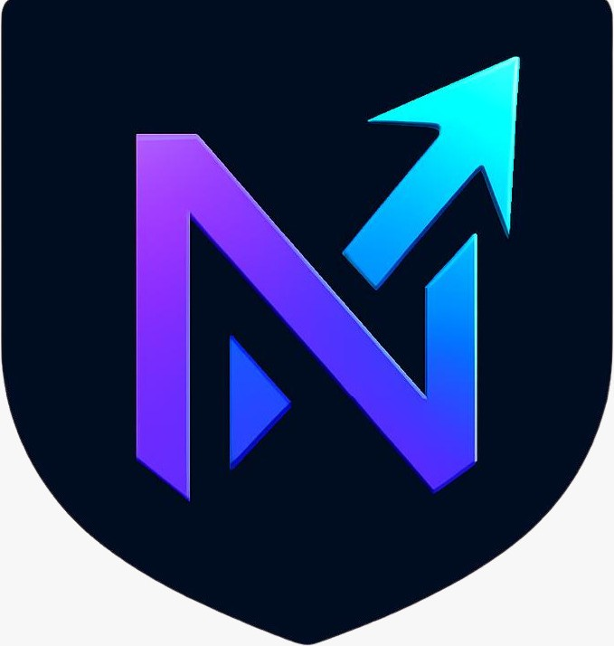
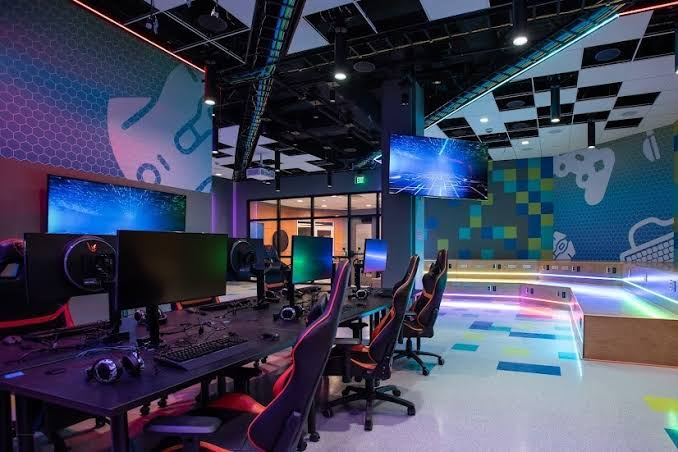
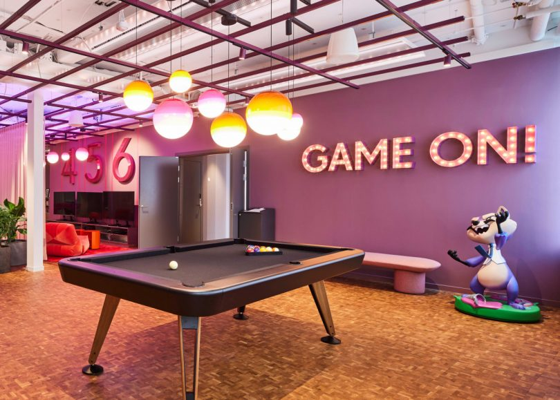
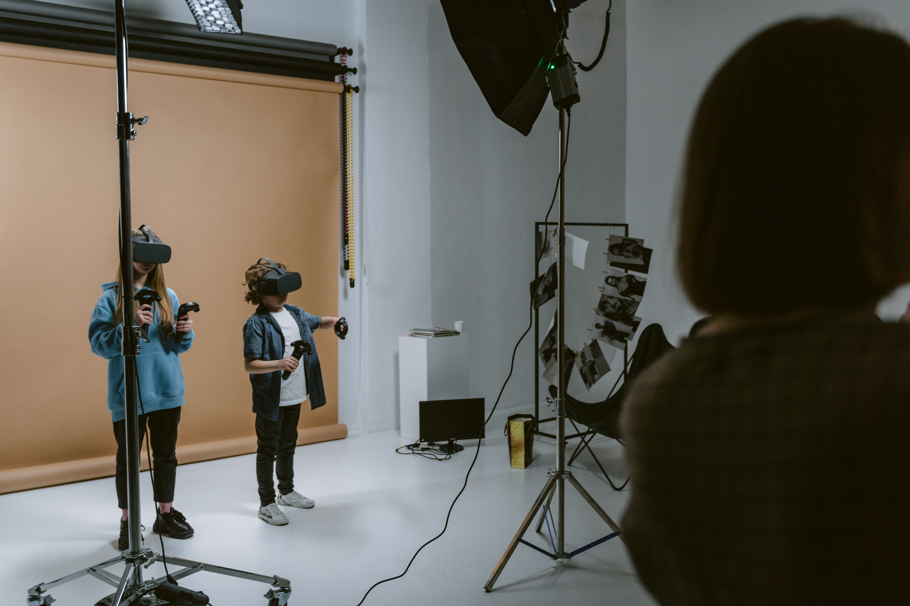

Pro Coaches&Training 1000+ Players community Weekly Tournaments
SME| Small&Medium Enterprise Gaming Hub
Built for South Africa's next champions, Next Level Gaming & Esports Arena is more than a gaming cafe - it's a launchpad.Founded by Jason Naidoo, we are a proudly South African SME on a mission to make pro-level gaming accessible to everyone. We provide elite 240Hz PCs, ultra-low latency fibre, and professional coaching that most gamers could never afford at home.We exist to develop local talent, host real prize-pool tournaments, and build a competitive community where casual players become pros - right here in Johannesburg.
© Gaming & E-Sports Arena-Johannesburg South Africa-SME Registered-Privacy Policy-Terms of Service